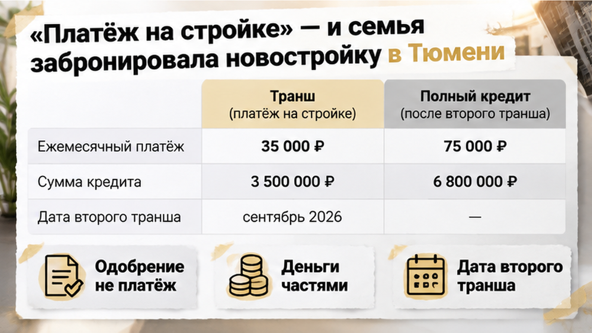
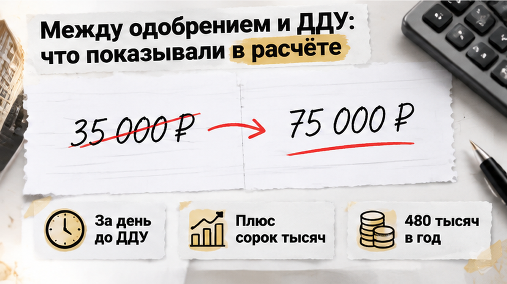
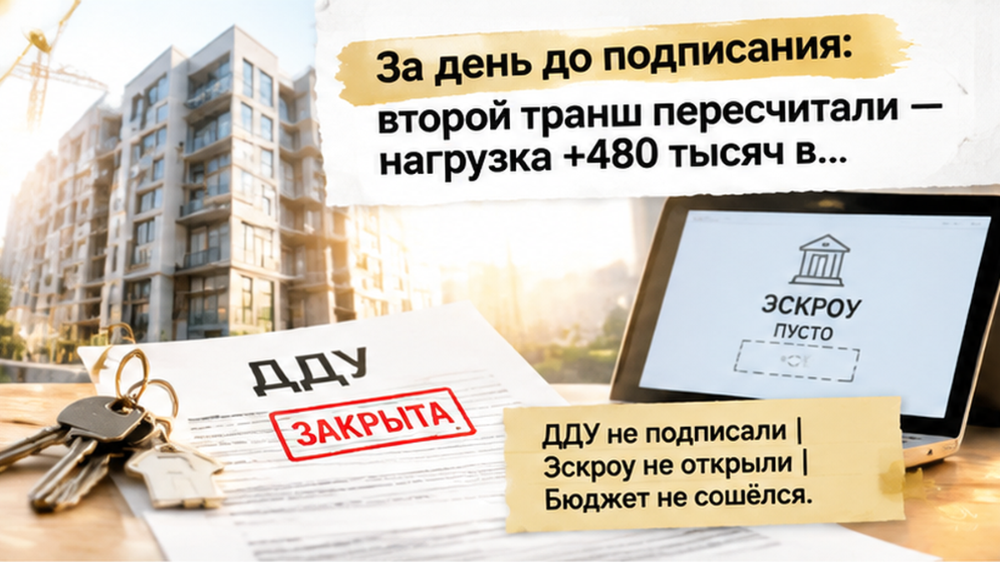
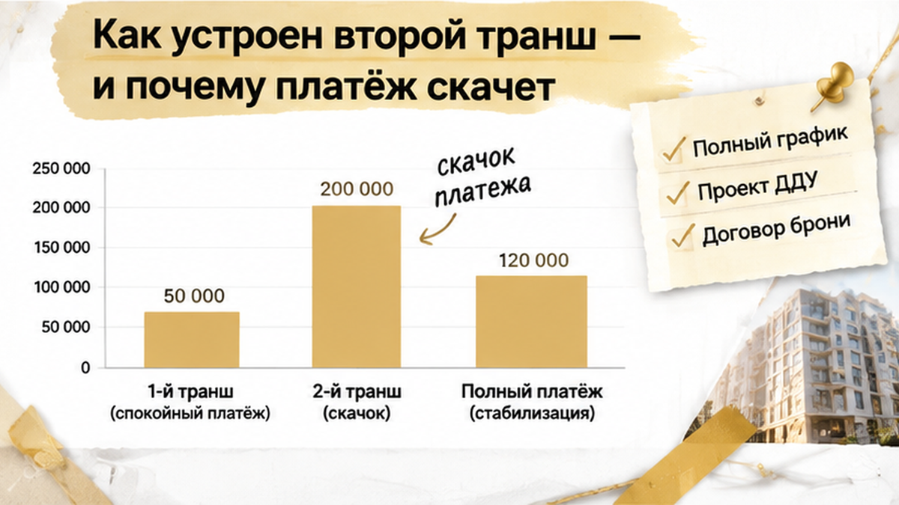

За день до подписания ДДУ семья в Тюмени увидела в полном графике банка прибавку примерно 40 тысяч рублей в месяц — около 480 тысяч рублей в год к ипотечной нагрузке. До этого квартира казалась посильной: бронь оформлена, ипотека одобрена, а «платёж на период стройки» укладывался в домашний бюджет. Но после второго транша, то есть выдачи оставшейся части кредита, действовал бы уже другой график. Доходы и текущие обязательства с ним не сходились, поэтому семья остановила сделку до подписания ДДУ и перевода денег на эскроу.
Я разбираю такие покупки через документы и семейный бюджет, а не только через красивую цифру в объявлении. Новые разборы — в Telegram и MAX.
Сначала всё выглядело как обычная покупка новостройки: квартира выбрана, бронь оформлена, ипотека на полную сумму одобрена. Менеджер показал расчёт с небольшим платежом, и семья приложила его к привычным расходам: после обязательных трат деньги оставались, значит, покупка казалась подъёмной.
Но в таком предложении важны слова на период стройки. Они описывают не весь кредит, а только первый этап. При траншевой ипотеке банк выдаёт деньги частями, и проценты начисляются на уже выданную сумму. Поэтому до второго транша платёж действительно может быть небольшим — это не обязательно ошибка в расчёте.
Проблема начинается, когда временную нагрузку принимают за постоянную. «Мы можем платить столько за эту квартиру» — один вывод. «Мы можем платить столько до следующей выдачи денег» — совсем другой. После второго транша банк выдаёт предусмотренную договором оставшуюся часть, а проценты считают с большей суммы. Низкий стартовый платёж поэтому ещё не отвечает на вопрос, потянет ли семья покупку целиком.

Одобрение ипотеки на полную сумму легко принять за подтверждение: раз банк согласился, значит, с деньгами всё решено. Но банк в этот момент подтверждает размер кредита, а не то, что семья спокойно проживёт с каждым будущим платежом. Транши меняют не сумму одобрения, а порядок выдачи и размер задолженности, на которую уже начисляются проценты.
Здесь нужно разделять два вопроса: готов ли банк выдать деньги и готова ли семья жить с платежом после полной выдачи. Один ответ не заменяет другой, даже если квартира уже забронирована, а подписание назначено.
В разборе почему одобрение ипотеки ещё не завершает покупку новостройки важна именно эта граница между этапами. Одобрение не означает, что ДДУ подписан, эскроу открыт и будущая нагрузка проверена семейным бюджетом.
До подписания договора ещё можно запросить полный график и сопоставить его с документами сделки. В нём должны быть видны дата и сумма следующего транша, а также платёж после выдачи оставшейся части кредита. Это важнее устного «потом, ближе к сдаче».
Рост платежа при этом не обязательно означает повышение ставки. Ставка может остаться прежней, но банк начнёт начислять проценты на большую выданную сумму. Именно полный график показывает ту часть кредита, которая не попала в привлекательный расчёт первого периода.

За день до ДДУ семья попросила полный график — не расчёт на начало стройки, а весь путь кредита до последнего платежа. Рядом оказались две цифры: привычная и та, что появится после выдачи оставшейся части кредита.
Разница составила около 40 тысяч рублей в месяц — примерно 480 тысяч рублей дополнительной нагрузки в год.
Важно: выросла не сумма второго транша на 480 тысяч рублей. На 480 тысяч в год увеличивались расходы семьи на обслуживание ипотеки по сравнению с первоначальным ориентиром. Это разные вещи.
Банк не поднимал ставку. Просто сначала проценты считались с уже выданной части кредита, а после второго транша — с большей суммы долга. Первый платёж был настоящим, но временным. Для семейного бюджета этого оказалось достаточно, чтобы вся покупка выглядела иначе.
В истории про остановку сделки после повышения ставки перед ДДУ причина роста была другой: там изменились условия по ставке. Здесь ставка оставалась прежней, а нагрузка выросла из-за схемы выдачи кредита.
Когда новый платёж сопоставили с доходом и действующими обязательствами, бюджет не сошёлся. Одобрение на полную сумму этого не меняло: банк был готов выдать кредит, но платить по графику предстояло семье.
Большой платёж мог начаться и до переезда: второй транш привязан к сроку в договоре, а не обязательно к получению ключей. Если деньги выдаются за несколько месяцев до сдачи дома, аренда остаётся рядом с уже полной ипотекой.

После сверки графика семья отказалась подписывать ДДУ. Эскроу не открывали, основная сумма кредита туда не поступила. Покупка остановилась до перехода обязательств в другую стадию.
С бронью всё оказалось отдельным вопросом. Она оформляется по своему договору, и её возврат зависит от его условий. Обещать семье полный возврат нельзя.
Но одобрение ипотеки и завершённая сделка — не одно и то же. Между ними остаются договоры, даты выдачи денег и проверка будущей нагрузки. Именно этот промежуток позволил остановиться до перевода средств на эскроу.
В разборе почему одобренная ипотека ещё не означает открытый эскроу я отдельно разбираю эту границу. Решение банка показывает, что кредит одобрен, но не говорит, что конкретный график подходит семье.
Покупателей не стали уговаривать «ещё немного потерпеть». Если расчёт держится только на временном платеже, подпись под ДДУ его не исправит: после сделки не появится ни дополнительный доход, ни возможность платить на 40 тысяч больше каждый месяц.
Семья остановилась с неподходящей нагрузкой, сохранив возможность сравнить другие условия и другую квартиру. Желание купить новостройку никуда не делось — просто сначала проверили, выдержит ли покупка семейный бюджет.
Кто должен был заметить рост платежа — банк, застройщик или сама семья до брони квартиры?
Транш — часть кредита, которую банк выдаёт отдельно. При покупке строящейся квартиры по ДДУ деньги поступают на эскроу не сразу целиком: сначала одна часть, затем следующая. Пока выдана только первая, проценты начисляются на неё, поэтому стартовый платёж выглядит заметно легче.
Но одобрена семье полная сумма. Остаток не исчезает и не становится добровольным выбором покупателя: его выдача предусмотрена условиями кредита. Траншей может быть два или больше, а второй иногда приходит за один–четыре месяца до сдачи дома — по календарной дате или после выполнения условий, а не обязательно перед получением ключей. Поэтому квартира ещё строится, аренда продолжается, а полный ипотечный платёж уже начался.
Для скачка платежа не обязательно повышать ставку. После выдачи второй части проценты начисляются на большую сумму долга. В этой истории причина была именно в переходе от временной нагрузки к полной, а не в изменении ставки перед ДДУ. Другой механизм разбирал в материале про рост ставки накануне подписания ДДУ.
Эскроу — специальный счёт, где деньги хранятся до выполнения условий сделки, — не отменяет обязанность платить банку за уже выданный кредит. Перенос ключей и движение денег на эскроу тоже не равны графику ипотеки: в одном материале я разбирал ситуацию, когда ключи от новостройки перенесли, а деньги на эскроу остались заморожены.
Не стоит рассчитывать и на обязательную повторную проверку дохода перед второй выдачей. Если по кредиту нет просрочек, банк часто не возвращается к вопросу, посильна ли семье новая нагрузка: график уже согласован.
Начинать разговор стоит не с вопроса «какой у нас самый маленький платёж», а с другого: «Покажите месяц, когда он станет полным». Одобрение ипотеки само по себе не завершает путь к ДДУ и эскроу: до подписи ещё можно сопоставить кредит с семейным бюджетом и остановиться, если расчёт не сходится.
| Что запросить | Что должно стать понятно |
|---|---|
| Полный график выдачи и платежей | Дата и сумма каждого транша, а также платёж после выдачи всего кредита. |
| Проект ДДУ, кредитный договор и условия одобрения | Совпадают ли суммы и сроки, к чему привязан второй транш — к дате или событию по стройке. |
| Пояснение на случай задержки сдачи | Когда начнётся полный платёж, если ключей ещё нет, и сколько времени он может идти одновременно с арендой. |
| Письменный расчёт программы | Сохраняются ли ставка, скидка и субсидия при выдаче кредита частями. Совместимость с семейной ипотекой нельзя считать автоматической. |
| Расходы семьи рядом с полным платежом | Остаются ли деньги после ипотеки, аренды и действующих обязательств — без расчёта на будущую прибавку к доходу. |
| Договор бронирования | Что произойдёт при отказе от покупки и предусмотрен ли возврат платы за бронь. |

Расчёт банка лучше сохранить в PDF или скриншотом, но он не заменяет договор. Если документы расходятся с показанным платежом, разницу нужно выяснить до подписи. Не стоит переносить условия соседней рекламы в свою сделку: маленький первоначальный взнос, семейная ставка и скидка застройщика не обязательно складываются в одно предложение. Важны ваш кредитный договор и ваш график выдачи денег.
В Telegram и MAX разбираю, какие цифры в предложениях новостроек Тюмени нужно сопоставить с договором. Можно подписаться, чтобы не потерять этот разбор перед встречей с менеджером.
Остановка перед ДДУ не означает, что семье нельзя покупать новостройку. Она означает, что конкретный график не подошёл её доходу, а выяснилось это до перевода основной суммы на эскроу. Вопрос с возвратом брони остаётся отдельным и решается по договору — обещать его заранее нельзя.
Продолжать неподъёмную покупку только потому, что квартиру уже выбрали, — не способ защитить потраченные деньги. В следующий раз разговор с банком можно начать прямо: «Покажите полный график траншей и платёж после выдачи остатка».
Такую проверку нужно сделать до подписания ДДУ и перевода денег на эскроу, пока решение ещё остаётся у покупателя. Семья из этой истории остановилась вовремя: не стала открывать эскроу с графиком, который не помещался в бюджет, и получила возможность искать другое сочетание квартиры и финансирования.